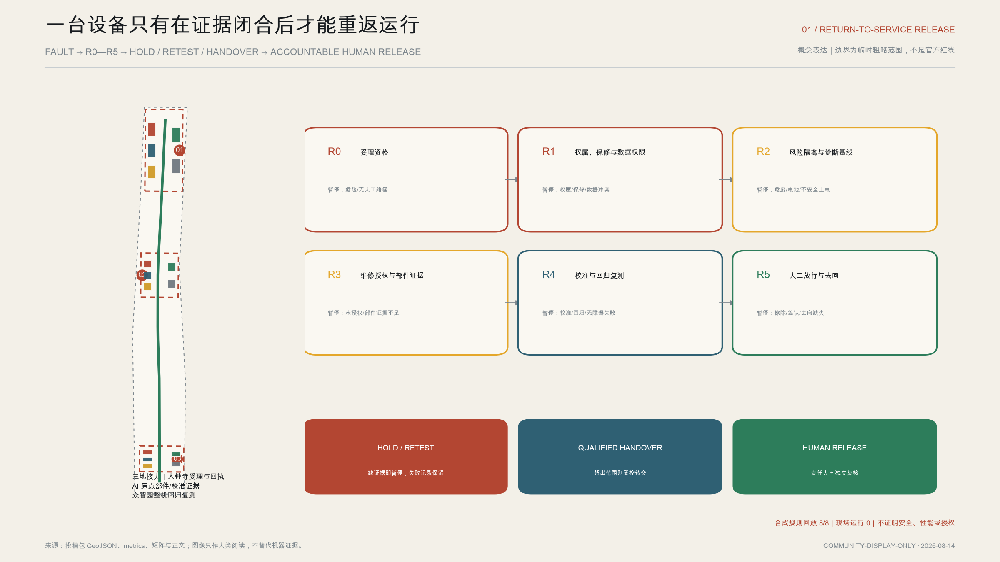
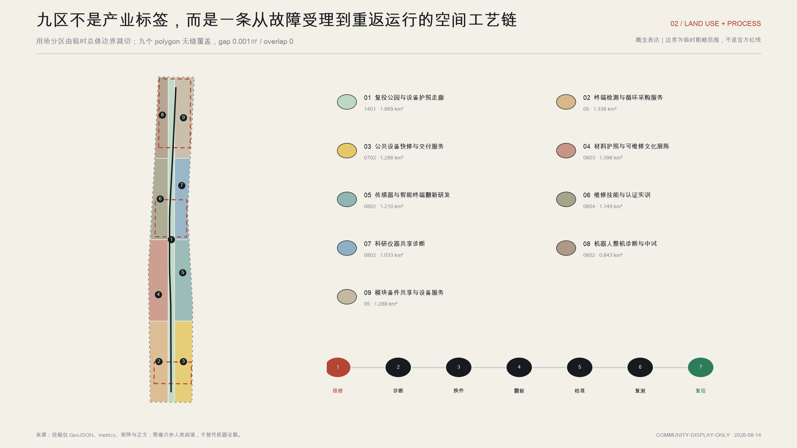
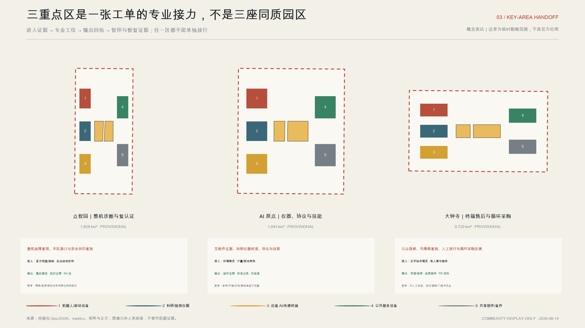
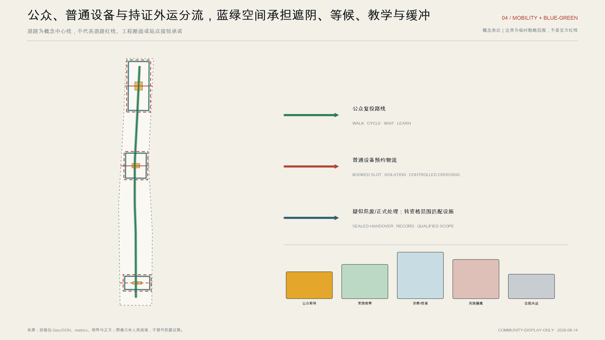
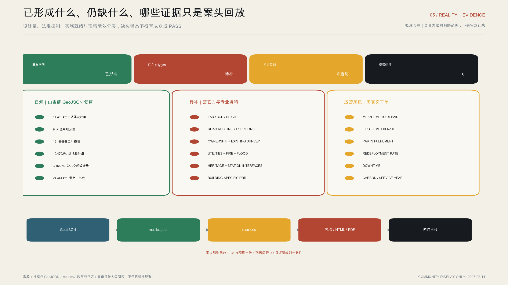

复役放行决定链
R0—R5 把故障设备分流到暂停、复测、资格交接或人工放行；现场运行仍为 0。

城市 AI 设备的换件、再制造、复认证与重返运行基础设施
概念表达｜边界为临时粗略范围，不是官方红线
一台公共服务机器人从大钟寺人工受理出发，经 AI 原点补齐部件、校准与权利证据，在众智园完成整机回归，最后回到大钟寺由责任人与独立复核共同签发限定回执。缺证据即 HOLD；超出范围即资格交接。
R0—R5 把故障设备分流到暂停、复测、资格交接或人工放行；现场运行仍为 0。

统筹研究—总体设计—重点区域从产业命题递进到可审查工位。

每区明确进入证据、输出回执、暂停条件和恢复依据，任一区都不能单独放行。

公众路线、普通设备物流和持证外运保持分流。

概念空间已形成；官方 polygon 待补；专业委托未启动；现场运行为 0。

任务覆盖：公告 1.3、1.4、1.5 与 agent.1—agent.6 共 23 条均进入 compliance_matrix.json；15 项设计深度为 complete。
来源：27 条包内来源、9 个 GeoJSON、R0—R5 合同、12 场景责任矩阵与双语正文。案头回放 8/8，现场运行 0。
假设：总体边界与三处重点区均为 provisional rough geometry；容积率、高度、法定建筑密度、道路红线、权属、管线、消防、防洪、文保与站点关系待正式资料和专业复核。